Monstros e Antagonistas
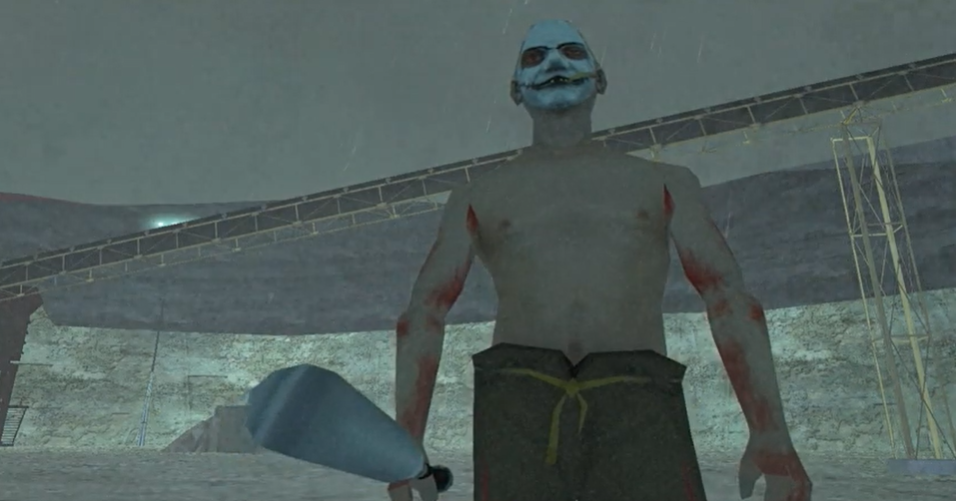
Caipira do Mal
Ele é o líder da seita do Glen Park e está passando por alguma metamorfose. Ninguém sabe o que ele realmente quer.
Dublador: Deco Benevides
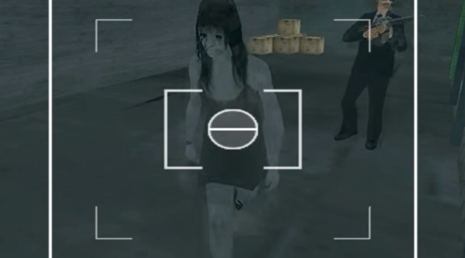
Mephisto
Ele é um demônio que é obcecado pelo CJ. Seu objetivo é roubar corpos e matar pessoas.
Dublador: Jean
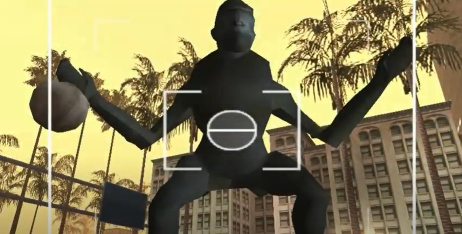
King Kong
Um monstro criado depois de várias experiências na Zombotech e acidentalmente solto no centro de Los Santos.
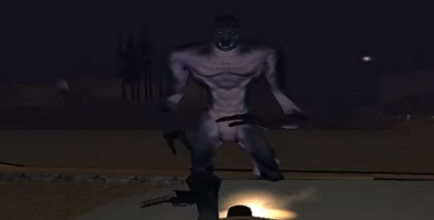
Godzilla
Depois de várias experiências com uma lagartixa, a criatura fugiu do laboratório submarino da Zombotech e atacou a praia de Los Santos.
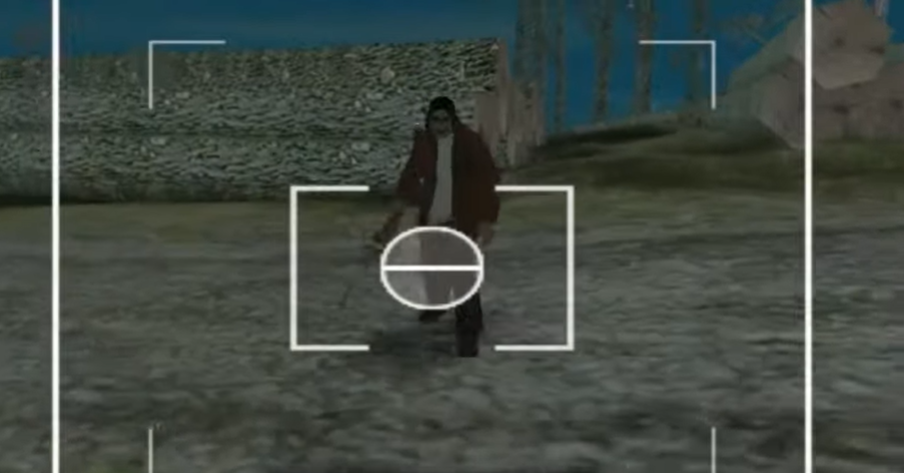
Leatherface
Ele é um serial killer e sua lenda é milenar. Dizem que ele fica em Panopticon, mas isso é apenas um boato. Ninguém nunca ficou vivo para confirmar sua existência.
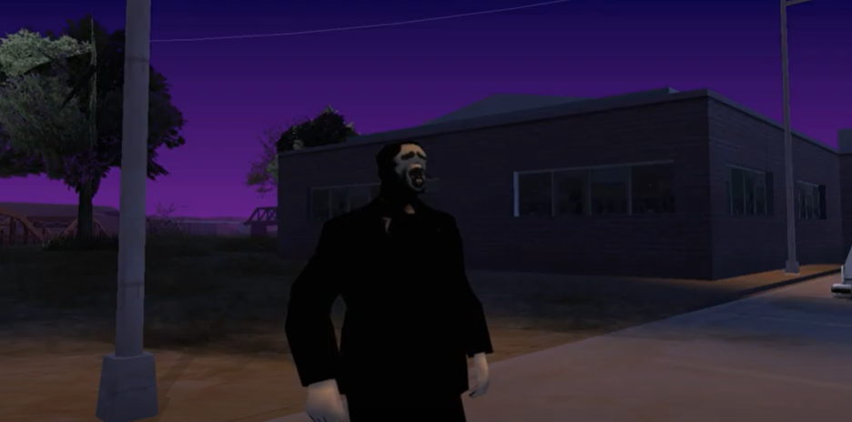
Pânico
Um serial killer que queria viver pacificamente em sua fazenda até que o Shadow invadiu o lugar para se esconder da polícia.
Dublador: Bruno Delmiro
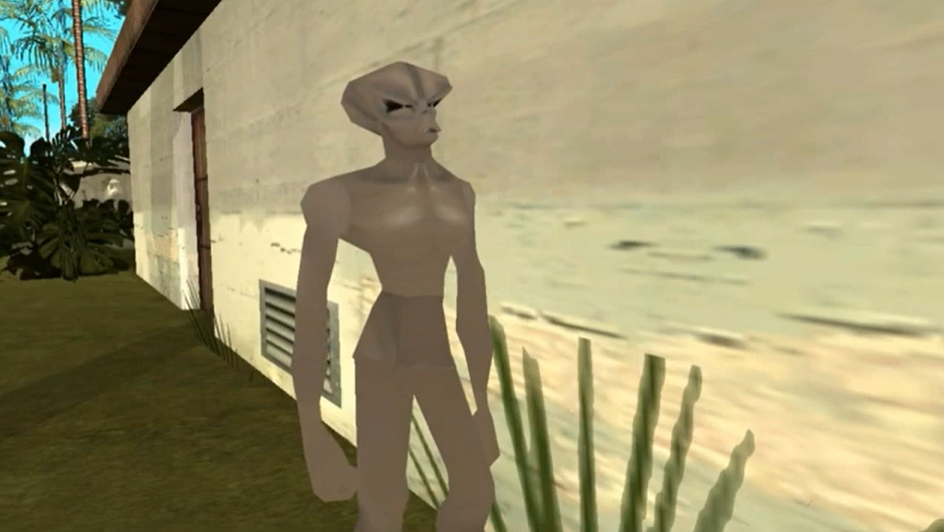
Alien Atrás da Casa do Ryder
Uma criatura vinda de outro planeta apenas para se bronzear, mas, na verdade, ele veio se fortalecer com as Linhas de Ley.
Dublador: Rômulo
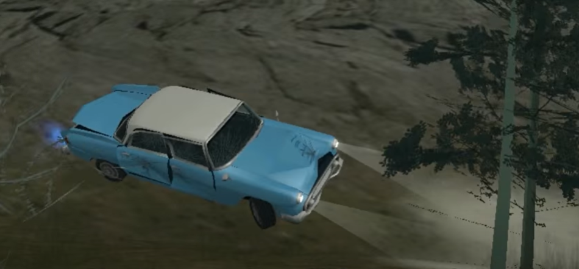
Carro Fantasma
Esse carro foi abandonado em Back o’ Beyond e agora está sendo pilotado por ninguém. Ele está possuído!
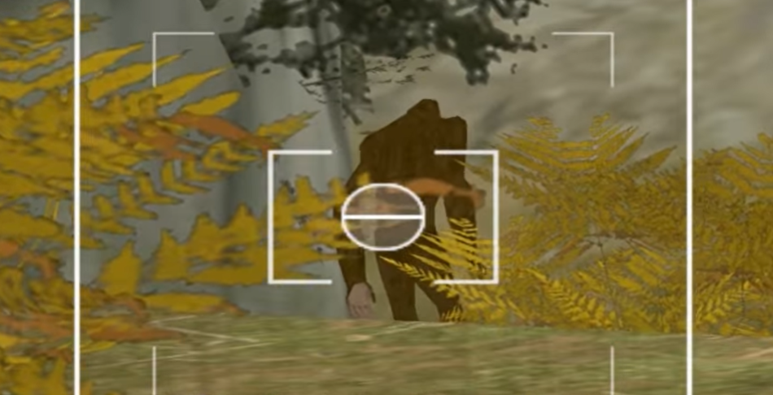
Bigfoot
A criatura mais procurada pelos criptozoologistas e caçadores de San Andreas. Ele existe!
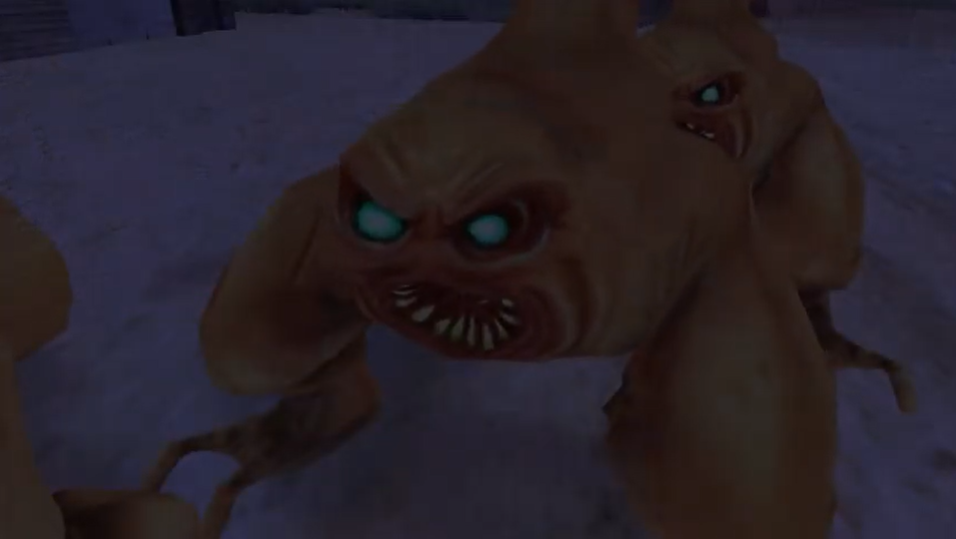
Criaturas da Cidade Abandonada
Estas criaturas foram experiências da Zombotech que não deram certo. Agora, elas se escondem na cidade abandonada do deserto esperando por ajuda.
Dubladores: Bruno Delmiro, Rômulo e Kaique
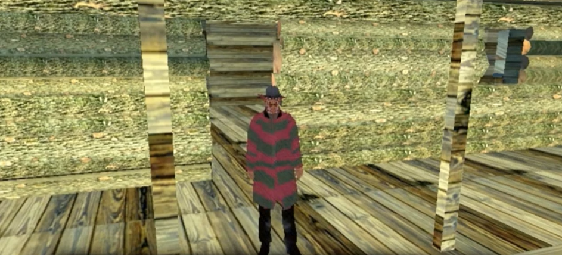
Freddy Krueger
Ele é uma criatura dos sonhos que estava se escondendo atrás de um ninja. Seu Myth Spot é no Mont Chilliad.
Dublador: Kaique
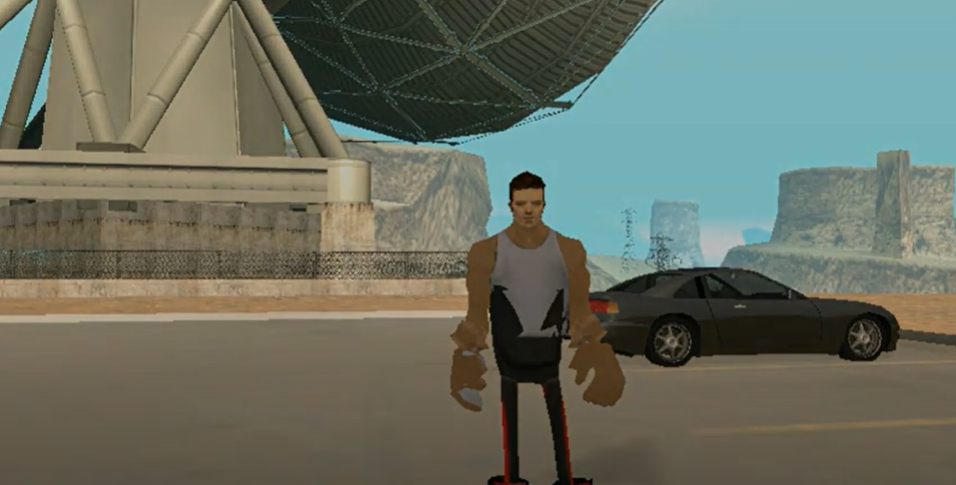
Mutante Maldito
Ele é metade monstro metade humano e sempre é atraído pelos Mythbusters. Seu objetivo principal é atrapalhar os Mythbusters e deixar eles estressados.
Dublador: Loquendo
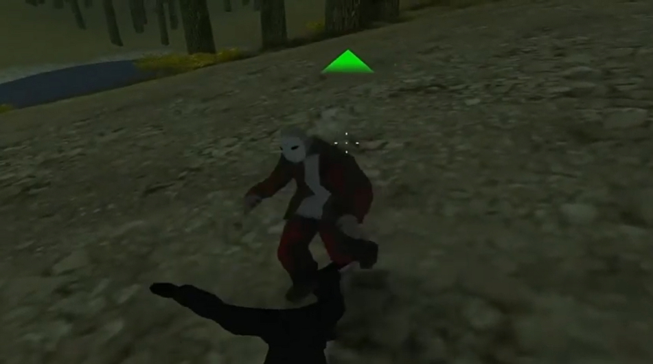
Jason
Um serial killer que vive numa cabana no meio da floresta. Alguns dizem que aquele lugar era um acampamento antigamente.
Dublador: Alessandro Zaharur
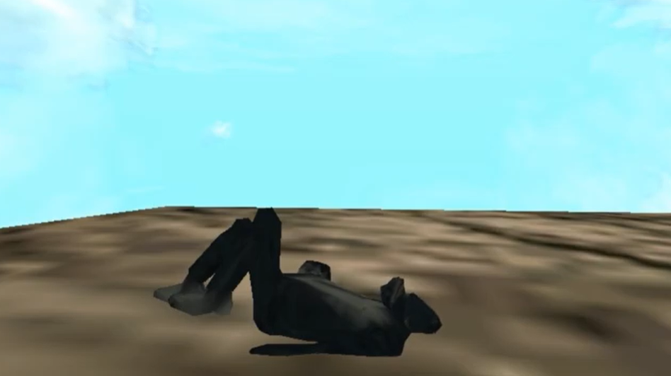
Yeti
Um monstro que fica no topo do Monte Chilliad olhando as estrelas. Ninguém sabe o segredo por trás disso.
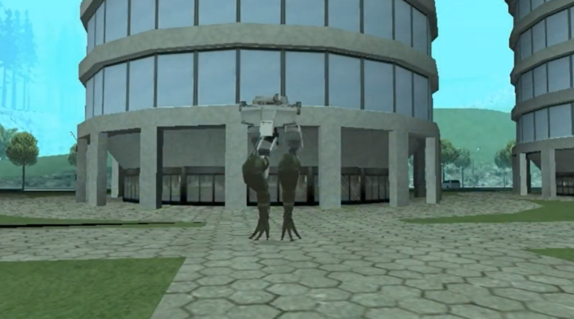
Gecko
Um robô gigante colocado na entrada de San Fierro que enlouqueceu e começou a matar inocentes.
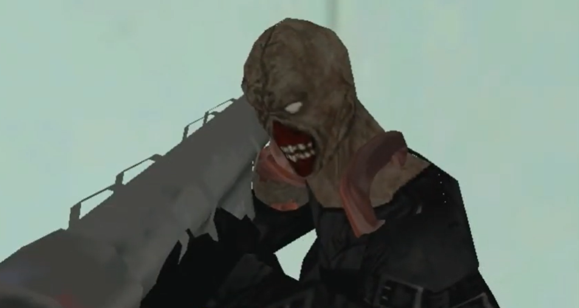
Nêmesis
Uma das experiências do Dr. Lap que saiu de sua cela e começou a destruir o edifício principal do laboratório Zombotech.
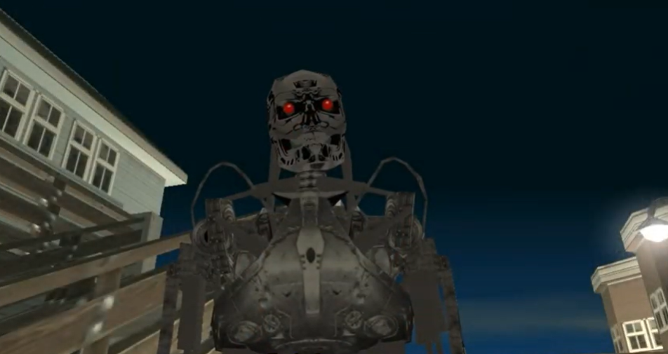
Terminator
Uma criação de Zero para fazer com que a caça aos monstros fosse mais segura e não precisasse de seres humanos como agentes.
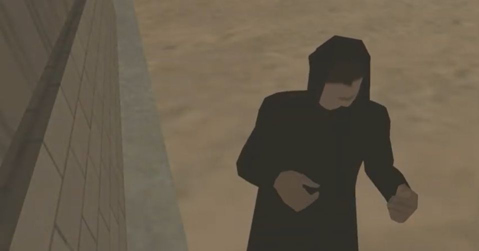
O Convidado
Ele diz que é um espírito milenar que veio de outra dimensão e, agora, precisa de um corpo forte o bastante para conter seus poderes. O tempo está passando!
Dublador: Daniel H.
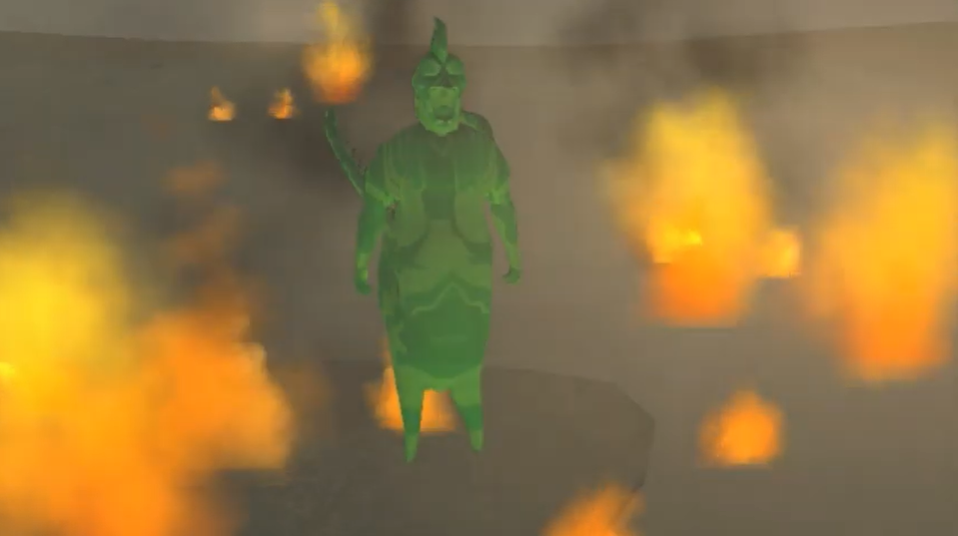
Kifflom
Uma criatura que não pode ser compreendida por olhos humanos. Para que as pessoas não enlouqueçam e arranquem seus olhos, Kifflom aparece como uma criatura azul centauro. O que é ele?
Dublador: ?